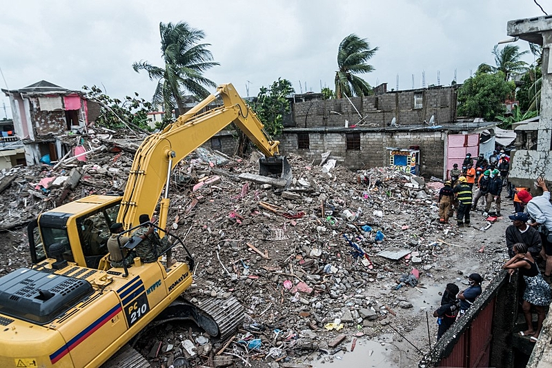

|

|
"Os terremotos no Haiti acontecem em função de o país
estar localizado em uma área de elevada instabilidade
tectônica. Além do encontro de diversas placas, duas
extensas zonas de falha se estendem ao norte e ao sul do Haiti,
e a sua movimentação pode dar origem a intensos tremores de terra."
|
|
|
"A destruição de infraestrutura urbana, casas e edifícios assim como
a morte de pessoas e os inúmeros feridos e desabrigados são algumas
das consequências dos terremotos. O Haiti, entretanto, enfrenta até
hoje as consequências de sismos que ocorreram há, pelo menos, uma
década."
|